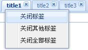

Ext.ux.TabCloseMenu插件的使用（TabPanel右键关闭菜单） 示例
关键字: ext.ux.tabclosemenu插件的使用（tabpanel右键关闭菜单） 示例Ext.ux.TabCloseMenu插件的使用（TabPanel右键关闭菜单） 示例
效果：

创建调用的HTML：
<html>
<head>
<meta http-equiv="Content-Type" content="text/html; charset=GBK" />
<title></title>
<link rel="stylesheet" type="text/css" href="extjs/resources/css/ext-all.css" />
<script type="text/javascript" src="extjs/adapter/ext/ext-base.js"></script>
<script type="text/javascript" src="extjs/ext-all.js"></script>
<script type="text/javascript" src="./TabCloseMenu.js"></script>
<style type="text/css">
</style>
<script>
Ext.onReady(function(){
new Ext.TabPanel({
renderTo : document.body,
region:'fit',
deferredRender:false,
activeTab:0,
resizeTabs:true, // turn on tab resizing
minTabWidth: 115,
tabWidth:135,
enableTabScroll:true,
items:[{title:"title1",id:'tab1',closable:true},{title:"title2",id:'tab2',closable:true},{title:"title3",id:'tab3',closable:true}],
plugins: new Ext.ux.TabCloseMenu()
});
});
</script>
</head>
<body>
</body>
</html>
Ext.ux.TabCloseMenu文件源码：
/*
* Ext JS Library 2.2
* Copyright(c) 2006-2008, Ext JS, LLC.
* licensing@extjs.com
*
* http://extjs.com/license
*/
// Very simple plugin for adding a close context menu to tabs
Ext.ux.TabCloseMenu = function(){
var tabs, menu, ctxItem;
this.init = function(tp){
tabs = tp;
tabs.on('contextmenu', onContextMenu);
}
function onContextMenu(ts, item, e){
if(!menu){ // create context menu on first right click
menu = new Ext.menu.Menu([{
id: tabs.id + '-close',
text: '关闭标签',
handler : function(){
tabs.remove(ctxItem);
}
},{
id: tabs.id + '-close-others',
text: '关闭其他标签',
handler : function(){
tabs.items.each(function(item){
if(item.closable && item != ctxItem){
tabs.remove(item);
}
});
}
},{
id: tabs.id + '-close-all',
text: '关闭全部标签',
handler : function(){
tabs.items.each(function(item){
if(item.closable){
tabs.remove(item);
}
});
}
}]);
}
ctxItem = item;
var items = menu.items;
items.get(tabs.id + '-close').setDisabled(!item.closable);
var disableOthers = true;
tabs.items.each(function(){
if(this != item && this.closable){
disableOthers = false;
return false;
}
});
items.get(tabs.id + '-close-others').setDisabled(disableOthers);
var disableAll = true;
tabs.items.each(function(){
if(this.closable){
disableAll = false;
return false;
}
});
items.get(tabs.id + '-close-all').setDisabled(disableAll);
menu.showAt(e.getPoint());
}
};
发表评论

我的留言簿 >>更多留言
-
你好，刚看了你的可编辑的columntree，想问一下，可以指定columntre ...
-- by kfliyangfan
最近加入圈子
最新评论
-
ExtJS中editable-column- ...
文件损坏!
-- by youzi520 -
ExtJS中如何给Label添加 ...
太好了，谢谢，收藏一下！
-- by telo.tao.yang -
ExtJS GroupHeaderPlugin ...
jfxia 写道有些bug，grid的列若是多了，显示会错位。区官方下载最新的1. ...
-- by 379548695 -
ExtJS GroupHeaderPlugin ...
有些bug，grid的列若是多了，显示会错位。
-- by jfxia -
Ext.ux.TabCloseMenu插件 ...
我用了ext-2.0的jsp的左边的tree里调用Ext.ux.TabCloseM ...
-- by bevis.cn


评论排行榜